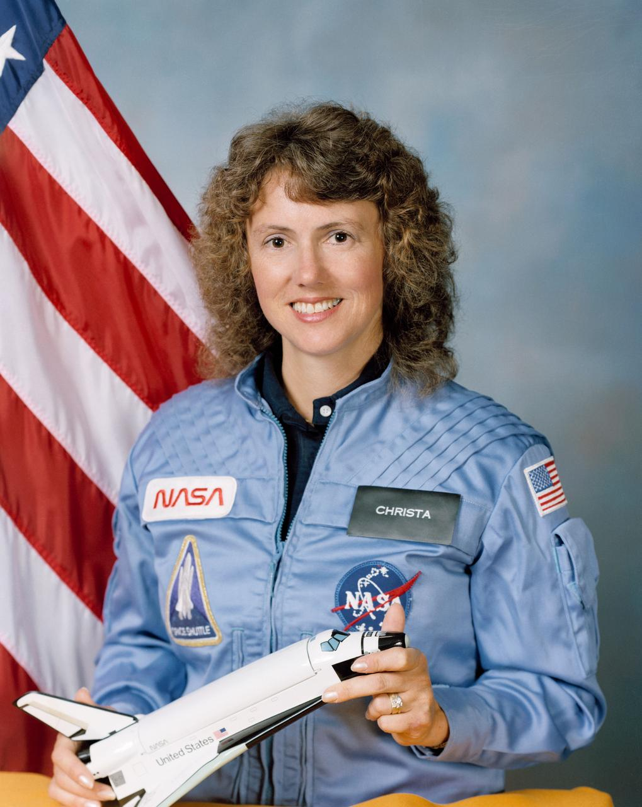

Throw Bench · ballistics
A throw is a fall with a sideways start. Gravity only pulls down. The sideways part keeps going until the ground gets in the way.
Orbit Bench · missing the ground
Same fall. If you go fast enough sideways, the ground drops away as fast as you fall. That is an orbit. Higher means slower, and a longer trip around.
The picture is a circular reference sketch. The multiplier changes its animation speed and color; it does not calculate an elliptical trajectory. Animation time is illustrative.
Look Up · orthographic ground track
This is the map for the mode. You are looking down on a globe, centered on the observer. The white dot is your place; the gold dot is the satellite’s position above Earth. The blue ring is where a 400 km satellite is geometrically above 10° elevation. It does not guarantee a visible or illuminated satellite. The arc is an invented ground track. Coastlines are rough teaching outlines; this is not a live pass prediction. This globe preserves the view from above your place, while Mercator stretches areas near the poles.
Who is already up there. Most of the bright moving trains are Starlink, flown by SpaceX on Falcon 9. The Station is still the one you can sometimes see with no telescope. SpaceX is also building Starship for a stated goal past the Moon: a city on Mars. That goal is public. It is not a schedule, and this camp is not affiliated with them.
- SpaceX
- Starship
- NASA
- NASA Mars
- Celestrak public satellite data
- U.S. Space & Rocket Center Space Camp — their videos, their name
External pages keep their own licenses. This page does not copy their footage.
Mars · the long throw
Orbit was missing the Earth. Mars is missing the Sun’s close neighborhood on purpose. A quiet transfer leaves Earth, coasts for most of a year, and meets Mars when Mars has come around to the same place. The windows open about every 26 months. SpaceX has said the point of Starship is to make that trip with people, and someday a city. NASA already has robots there. Neither has a crewed landing on the calendar you can count on.
Month zero is an invented starting alignment, not a calendar date. Circular planet paths, approximate periods, and a generous alignment tolerance make this a teaching sketch. See NASA JPL’s launch-window lesson.
Starship · the ship that wants to come back
This is the object. A stainless-steel tower, nine meters across, burning methane and oxygen, built to fly, come home, and fly again. SpaceX lists the stack at about 123–124 m, taller than the Saturn V that went to the Moon. Super Heavy, the booster, lights 33 Raptor engines. The ship on top lights six: three for air, three with bigger bells for the empty dark.
Rocket silhouettes are approximate; the person is enlarged for visibility.
Almost all of the launch weight is propellant. SpaceX lists about 3,400–3,650 t in the booster and about 1,500–1,600 t in the ship. The engines drink it. What is left, if the reuse works, is the part that matters: a payload bay wide enough to hold a small house, with a design goal of more than 100 tonnes delivered to low orbit in a reusable configuration. Delivered payload is not the same as return payload.
Why methane. It burns clean enough to fly again, and on Mars it can be made from the air and the ice. Carbon dioxide plus water, split and combined, is a return ticket waiting on the ground. That is the imagination hook. The ship is designed to burn fuel the planet can help make.
What has actually happened. Boosters have been caught by the tower. On 28 September 2026, Flight 14 from Starbase, Texas, was reported to reach orbit and deploy next-generation Starlink satellites. See SpaceX’s Flight 14 page for mission details. This summary was reviewed on 6 October 2026. Catching the ship, reflying both stages quickly, and moving propellant from one ship to another in orbit are still ahead. A Mars crew is further ahead than that. Design targets are not landings.
To leave Earth orbit for Mars, ships would meet in orbit and fill the one that is going. One launch is the truck. The tanker flights are the road. That is why reuse is the whole point, not a bonus.
- SpaceX Starship page — their numbers, their vehicle
- NASA Artemis — the Moon path that also wants a big lander
Not affiliated with SpaceX. Heights and propellant loads are the company’s published figures and have changed between versions. Thrust and payload are design targets until a flight shows them.
A clean launch, for the room. This is SpaceX’s own film of the fifth flight, 13 October 2024: liftoff, and the tower catching the booster. It does not show a vehicle breaking up.
For Christa · the cost of going

Sharon Christa McAuliffe was a social studies teacher at Concord High School in New Hampshire. In 1985 NASA chose her from more than 11,000 teachers to fly, and to teach from orbit. She was 37. She said a teacher touches the future.
On 28 January 1986, Challenger, mission STS-51-L, broke apart 73 seconds after liftoff. Christa and her six crewmates were killed: Francis R. Scobee, Michael J. Smith, Ronald McNair, Ellison Onizuka, Judith Resnik, and Gregory Jarvis. Classrooms were watching. A generation of hopefuls learned, in the same minute, that going has a cost, and that the people who pay it are real.
This page does not show that morning. The portrait is the one NASA made on 26 September 1985, while she was still training. Photo credit: NASA, S85-41239. It is in the public domain.
The camp is for the reason she went. Look up. Ask how it works. Then remember who already paid to open the door.